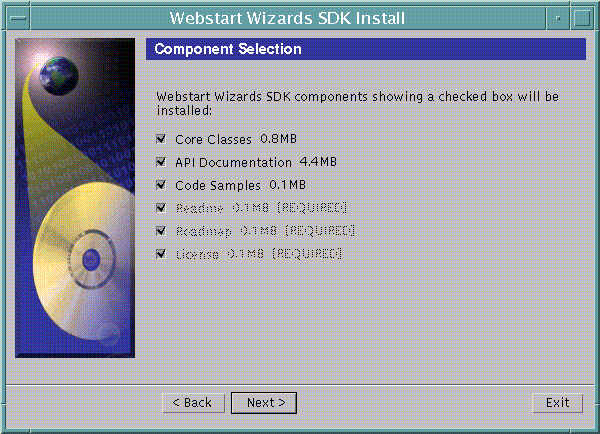

All Packages Class Hierarchy This Package Previous Next Index
Class com.sun.install.panels.ComponentPanel
java.lang.Object
|
+----java.awt.Component
|
+----java.awt.Container
|
+----java.awt.Panel
|
+----com.sun.wizards.core.WizardComponent
|
+----com.sun.wizards.core.WizardLeaf
|
+----com.sun.install.panels.ComponentPanel
- public class ComponentPanel
- extends WizardLeaf
- implements AdjustmentListener
The ComponentPanel allows a user to select which product components
are to be installed. It can then inform other panels and/or tasks
of the user selections so that the user may customize what they are
installing.
Typically, software has several optional components that may or may
not be installed. As an example, here is a piece of software with
3 basic components that may or may not be installed, and 3 required
components that must be installed.

Sample builder code to create this panel:
String myName = "SampleComponentPanel";
Vector compNames = new Vector();
Vector compIDs = new Vector();
Vector requiredCompIDs = new Vector();
compNames.addElement("Core Classes");
compNames.addElement("API Documentation");
compNames.addElement("Code Samples");
compNames.addElement("Readme");
compNames.addElement("Roadmap");
compNames.addElement("License");
requiredCompIDs.addElement("Readme");
requiredCompIDs.addElement("Roadmap");
requiredCompIDs.addElement("License");
// set required components into wizard so panel can get them at runtime
wizardState.setData(InstallConstants.requiredComponentIDs, RequiredCompIDs);
ComponentPanel samplePanel = new ComponentPanel(wizardState, myName, compNames, compIDs, (Vector)compIDs.clone());
Note that the final argument to the ComponentPanel constructor is a
clone of the original one to avoid passing the same reference to
the same object and affecting both at the same time.
The description ("Webstart Wizards SDK components showing a checked box..."
can be set in the Localized Resource Bundle for this wizard.
At runtime, a ProductServerObject is created and placed on the server,
and the product tree is queried for the sizes the components being
displayed on this panel. If no size is found for a component, or
the size turns out to be 0, then no size information is displayed.
The data in the wizard state referenced by
InstallConstants.requiredComponentIDs is retrieved to determine
which components are required (not de-selectable).

-
 ComponentPanel()
ComponentPanel()
- Creates a WizardComponent with a route to the root of the server
object tree.
-
ComponentPanel(String, Route, WizardTreeManager)
- Creates a WizardComponent with the specified name, the specified
route and wizard manager.
-
ComponentPanel(WizardState, String)
- Creates a WizardComponent with the specified name,
application name, the specified list of components,
and identifiers for each component.

-
 addRuntimeResources(Vector)
addRuntimeResources(Vector)
- Get the runtime classes required by this panel.
-
adjustmentValueChanged(AdjustmentEvent)
- Invoked when the scroll bar is used.
-
beginDisplay()
- This method is called when the WizardComponent is displayed.
-
createUI()
- This method creates the user interface.
-
deserialize(DataInput)
- Deserialize this WizardComponent from the specified input
stream.
-
getButtonMask()
- Returns information suggesting which buttons should be
displayed for this panel.
-
isDisplayComplete()
- Returns true if this WizardComponent is finished displaying.
-
paint(Graphics)
- The paint method is called when the panel is displayed.
-
serialize(DataOutput)
- Serialize this WizardComponent to the specified output
stream.
-
setDescription(String)
- Sets the panel description that appears at the
top of the ComponentPanel.

 ComponentPanel
ComponentPanel
public ComponentPanel()
- Creates a WizardComponent with a route to the root of the server
object tree.
ComponentPanel
public ComponentPanel(WizardState wizardState,
String name)
- Creates a WizardComponent with the specified name,
application name, the specified list of components,
and identifiers for each component.
- Parameters:
- wizardState - The buildtime WizardState.
- name - The name for this WizardComponent.
ComponentPanel
public ComponentPanel(String name,
Route route,
WizardTreeManager wizardManager)
- Creates a WizardComponent with the specified name, the specified
route and wizard manager.
- Parameters:
- name - The name for this WizardComponent.
- route - The route to the appropriate server side object.
- wizardManager - The wizardManager responsible for this component.

 beginDisplay
beginDisplay
public void beginDisplay()
- This method is called when the WizardComponent is displayed.
- Overrides:
- beginDisplay in class WizardComponent
createUI
public void createUI()
- This method creates the user interface.
- Overrides:
- createUI in class WizardLeaf
adjustmentValueChanged
public void adjustmentValueChanged(AdjustmentEvent e)
- Invoked when the scroll bar is used.
paint
public void paint(Graphics g)
- The paint method is called when the panel is displayed. This is a good
time to set the adjustment value on the scrollbar.
- Overrides:
- paint in class Container
setDescription
public void setDescription(String description)
- Sets the panel description that appears at the
top of the ComponentPanel.
isDisplayComplete
public boolean isDisplayComplete()
- Returns true if this WizardComponent is finished displaying.
This method can be used to verify user input.
- Returns:
- true if the display of this WizardComponent is
complete; false otherwise.
- Overrides:
- isDisplayComplete in class WizardComponent
getButtonMask
public int getButtonMask()
- Returns information suggesting which buttons should be
displayed for this panel.
The ComponentPanel displays all the navigation buttons.
- Returns:
- A button mask identifying valid navigation buttons.
- Overrides:
- getButtonMask in class WizardLeaf
serialize
protected void serialize(DataOutput out)
- Serialize this WizardComponent to the specified output
stream. This method does not save its children.
- Parameters:
- out - The output stream to which this WizardComponent will be
serialized.
- Overrides:
- serialize in class WizardComponent
- See Also:
- serializeChildren
deserialize
protected void deserialize(DataInput in)
- Deserialize this WizardComponent from the specified input
stream. This method does not deserialize its children.
- Parameters:
- in - The input stream from which this WizardComponent will be
deserialized.
- Overrides:
- deserialize in class WizardComponent
- See Also:
- deserializeChildren
addRuntimeResources
public void addRuntimeResources(Vector resourceVector)
- Get the runtime classes required by this panel.
- Parameters:
- resourceVector - The vector containing resources that this method will add to.
- Overrides:
- addRuntimeResources in class WizardLeaf
All Packages Class Hierarchy This Package Previous Next Index